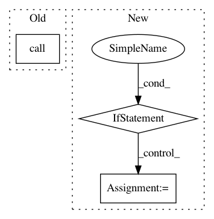

b95cf4a1b1b5f11ecc13299a6536eb035ea1d530,keras/engine/topology.py,Container,run_internal_graph,#Container#Any#Any#,1826
Before Change
if len(computed_data) == 1:
computed_tensor, computed_mask = computed_data[0]
if "mask" in inspect.getargspec(layer.call).args:
output_tensors = _to_list(layer.call(computed_tensor,
mask=computed_mask))
else:
output_tensors = _to_list(layer.call(computed_tensor))
output_masks = _to_list(layer.compute_mask(computed_tensor,
After Change
if len(computed_data) == 1:
computed_tensor, computed_mask = computed_data[0]
if "mask" in inspect.getargspec(layer.call).args:
if "mask" not in kwargs:
kwargs["mask"] = computed_mask
output_tensors = _to_list(layer.call(computed_tensor, **kwargs))
output_masks = _to_list(layer.compute_mask(computed_tensor,
computed_mask))
computed_tensors = [computed_tensor]
In pattern: SUPERPATTERN
Frequency: 3
Non-data size: 3
Instances
Project Name: keras-team/keras
Commit Name: b95cf4a1b1b5f11ecc13299a6536eb035ea1d530
Time: 2017-02-20
Author: francois.chollet@gmail.com
File Name: keras/engine/topology.py
Class Name: Container
Method Name: run_internal_graph
Project Name: NervanaSystems/nlp-architect
Commit Name: f2889ca90ddd60b19070b7e8fbcb0867ae4c47ed
Time: 2019-05-01
Author: peter.izsak@intel.com
File Name: setup.py
Class Name:
Method Name:
Project Name: tryolabs/luminoth
Commit Name: 7bf44d7608c6d91f45695d1bb1d910a440aa449c
Time: 2018-11-06
Author: dekked@gmail.com
File Name: luminoth/tools/cloud/gcloud.py
Class Name:
Method Name: build_package